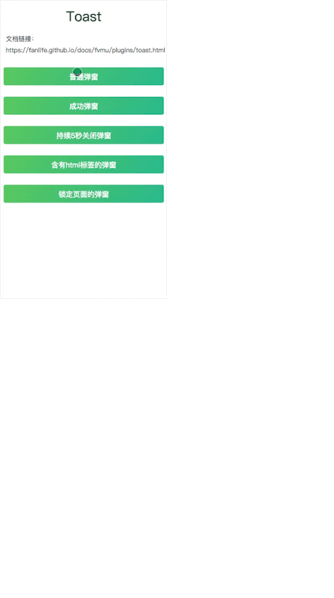

<!DOCTYPE HTML>
<html lang="" >
    <head>
        <meta charset="UTF-8">
        <meta content="text/html; charset=utf-8" http-equiv="Content-Type">
        <title>Toast弹窗 · GitBook</title>
        <meta http-equiv="X-UA-Compatible" content="IE=edge" />
        <meta name="description" content="">
        <meta name="generator" content="GitBook 3.2.3">
        
        
        
    
    <link rel="stylesheet" href="../../gitbook/style.css">

    
            
                
                <link rel="stylesheet" href="../../gitbook/gitbook-plugin-highlight/website.css">
                
            
                
                <link rel="stylesheet" href="../../gitbook/gitbook-plugin-search/search.css">
                
            
                
                <link rel="stylesheet" href="../../gitbook/gitbook-plugin-fontsettings/website.css">
                
            
        

    

    
        
    
        
    
        
    
        
    
        
    
        
    

        
    
    
    <meta name="HandheldFriendly" content="true"/>
    <meta name="viewport" content="width=device-width, initial-scale=1, user-scalable=no">
    <meta name="apple-mobile-web-app-capable" content="yes">
    <meta name="apple-mobile-web-app-status-bar-style" content="black">
    <link rel="apple-touch-icon-precomposed" sizes="152x152" href="../../gitbook/images/apple-touch-icon-precomposed-152.png">
    <link rel="shortcut icon" href="../../gitbook/images/favicon.ico" type="image/x-icon">

    
    <link rel="next" href="dialog.html" />
    
    
    <link rel="prev" href="./" />
    

    </head>
    <body>
        
<div class="book">
    <div class="book-summary">
        
            
<div id="book-search-input" role="search">
    <input type="text" placeholder="Type to search" />
</div>

            
                <nav role="navigation">
                


<ul class="summary">
    
    

    

    
        
        
    
        <li class="chapter " data-level="1.1" data-path="../../">
            
                <a href="../../">
            
                    
                    返利网前端文档
            
                </a>
            

            
            <ul class="articles">
                
    
        <li class="chapter " data-level="1.1.1" data-path="../">
            
                <a href="../">
            
                    
                    FVMU帮助文档
            
                </a>
            

            
            <ul class="articles">
                
    
        <li class="chapter " data-level="1.1.1.1" data-path="./">
            
                <a href="./">
            
                    
                    plugins
            
                </a>
            

            
            <ul class="articles">
                
    
        <li class="chapter active" data-level="1.1.1.1.1" data-path="toast.html">
            
                <a href="toast.html">
            
                    
                    Toast弹窗
            
                </a>
            

            
        </li>
    
        <li class="chapter " data-level="1.1.1.1.2" data-path="dialog.html">
            
                <a href="dialog.html">
            
                    
                    Dialog对话框
            
                </a>
            

            
        </li>
    

            </ul>
            
        </li>
    
        <li class="chapter " data-level="1.1.1.2" data-path="../components/">
            
                <a href="../components/">
            
                    
                    components
            
                </a>
            

            
        </li>
    

            </ul>
            
        </li>
    

            </ul>
            
        </li>
    

    

    <li class="divider"></li>

    <li>
        <a href="https://www.gitbook.com" target="blank" class="gitbook-link">
            Published with GitBook
        </a>
    </li>
</ul>


                </nav>
            
        
    </div>

    <div class="book-body">
        
            <div class="body-inner">
                
                    

<div class="book-header" role="navigation">
    

    <!-- Title -->
    <h1>
        <i class="fa fa-circle-o-notch fa-spin"></i>
        <a href="../.." >Toast弹窗</a>
    </h1>
</div>


                    <div class="page-wrapper" tabindex="-1" role="main">
                        <div class="page-inner">
                            
<div id="book-search-results">
    <div class="search-noresults">
    
                                <section class="normal markdown-section">
                                
                                <h1 id="toast">Toast</h1>
<h2 id="&#x57FA;&#x672C;&#x7528;&#x6CD5;">&#x57FA;&#x672C;&#x7528;&#x6CD5;</h2>
<pre><code class="lang-javascript"><span class="hljs-keyword">import</span> { Toast } <span class="hljs-keyword">from</span> <span class="hljs-string">&apos;fvmu&apos;</span>

Toast.open(<span class="hljs-string">&apos;&#x6211;&#x662F;&#x4E00;&#x4E2A;&#x5F39;&#x7A97;&apos;</span>)
</code></pre>
<p></p>
<h2 id="&#x6807;&#x51C6;&#x7528;&#x6CD5;">&#x6807;&#x51C6;&#x7528;&#x6CD5;</h2>
<pre><code class="lang-javascript">Toast.open({
    type: <span class="hljs-string">&apos;normal&apos;</span>,
    content: <span class="hljs-string">&apos;&#x6211;&#x662F;&#x4E00;&#x4E2A;&#x5F39;&#x7A97;&apos;</span>,
    duration: <span class="hljs-number">2500</span>,
    lock: <span class="hljs-literal">false</span>,
    onClose: () =&gt; {
        alert(<span class="hljs-string">&apos;ok&apos;</span>)
    }
})
</code></pre>
<h3 id="&#x53C2;&#x6570;&#x8BF4;&#x660E;">&#x53C2;&#x6570;&#x8BF4;&#x660E;</h3>
<table>
<thead>
<tr>
<th>&#x53C2;&#x6570;</th>
<th>&#x8BF4;&#x660E;</th>
<th>&#x7C7B;&#x578B;</th>
<th style="text-align:center">&#x53EF;&#x9009;&#x503C;</th>
<th style="text-align:center">&#x9ED8;&#x8BA4;&#x503C; </th>
</tr>
</thead>
<tbody>
<tr>
<td>type</td>
<td>&#x5F39;&#x7A97;&#x7C7B;&#x578B;(&#x5F39;&#x7A97;&#x6587;&#x5B57;&#x989C;&#x8272;&#x4E0D;&#x540C;)</td>
<td>string</td>
<td style="text-align:center">normal/success/warning/error</td>
<td style="text-align:center">normal</td>
</tr>
<tr>
<td>content</td>
<td>&#x5F39;&#x7A97;&#x6587;&#x6848;&#xFF0C;&#x5FC5;&#x586B;</td>
<td>string</td>
<td style="text-align:center">&#x2014;</td>
<td style="text-align:center">&#x2014;</td>
</tr>
<tr>
<td>duration</td>
<td>&#x6301;&#x7EED;&#x65F6;&#x95F4;(&#x6BEB;&#x79D2;)</td>
<td>number</td>
<td style="text-align:center">&#x2014;</td>
<td style="text-align:center">2500</td>
</tr>
<tr>
<td>lock</td>
<td>&#x662F;&#x5426;&#x9501;&#x5B9A;&#x5C4F;&#x5E55;(&#x9501;&#x5B9A;&#x5219;&#x5C4F;&#x5E55;&#x65E0;&#x6CD5;&#x70B9;&#x51FB;)</td>
<td>boolean</td>
<td style="text-align:center">&#x2014;</td>
<td style="text-align:center">false</td>
</tr>
<tr>
<td>onClose</td>
<td>&#x5F39;&#x7A97;&#x5173;&#x95ED;&#x540E;&#x56DE;&#x8C03;</td>
<td>function</td>
<td style="text-align:center">&#x2014;</td>
<td style="text-align:center">&#x2014;</td>
</tr>
</tbody>
</table>
<h2 id="&#x5FEB;&#x6377;&#x7528;&#x6CD5;">&#x5FEB;&#x6377;&#x7528;&#x6CD5;</h2>
<pre><code class="lang-javascript">Toast.open(<span class="hljs-string">&apos;&#x6211;&#x662F;&#x4E00;&#x4E2A;&#x666E;&#x901A;&#x5F39;&#x7A97;&apos;</span>);
<span class="hljs-comment">// &#x7B49;&#x540C;&#x4E8E;</span>
Toast.open({
    type: <span class="hljs-string">&apos;normal&apos;</span>,
    content: <span class="hljs-string">&apos;&#x6211;&#x662F;&#x4E00;&#x4E2A;&#x666E;&#x901A;&#x5F39;&#x7A97;&apos;</span>
});

Toast.success(<span class="hljs-string">&apos;&#x6211;&#x662F;&#x4E00;&#x4E2A;&#x6210;&#x529F;&#x5F39;&#x7A97;&apos;</span>);
Toast.error(<span class="hljs-string">&apos;&#x6211;&#x662F;&#x4E00;&#x4E2A;&#x9519;&#x8BEF;&#x5F39;&#x7A97;&apos;</span>);
Toast.warning(<span class="hljs-string">&apos;&#x6211;&#x662F;&#x4E00;&#x4E2A;&#x8B66;&#x544A;&#x5F39;&#x7A97;&apos;</span>);
</code></pre>

                                
                                </section>
                            
    </div>
    <div class="search-results">
        <div class="has-results">
            
            <h1 class="search-results-title"><span class='search-results-count'></span> results matching "<span class='search-query'></span>"</h1>
            <ul class="search-results-list"></ul>
            
        </div>
        <div class="no-results">
            
            <h1 class="search-results-title">No results matching "<span class='search-query'></span>"</h1>
            
        </div>
    </div>
</div>

                        </div>
                    </div>
                
            </div>

            
                
                <a href="./" class="navigation navigation-prev " aria-label="Previous page: plugins">
                    <i class="fa fa-angle-left"></i>
                </a>
                
                
                <a href="dialog.html" class="navigation navigation-next " aria-label="Next page: Dialog对话框">
                    <i class="fa fa-angle-right"></i>
                </a>
                
            
        
    </div>

    <script>
        var gitbook = gitbook || [];
        gitbook.push(function() {
            gitbook.page.hasChanged({"page":{"title":"Toast弹窗","level":"1.1.1.1.1","depth":4,"next":{"title":"Dialog对话框","level":"1.1.1.1.2","depth":4,"path":"fvmu/plugins/dialog.md","ref":"fvmu/plugins/dialog.md","articles":[]},"previous":{"title":"plugins","level":"1.1.1.1","depth":3,"path":"fvmu/plugins/README.md","ref":"fvmu/plugins/README.md","articles":[{"title":"Toast弹窗","level":"1.1.1.1.1","depth":4,"path":"fvmu/plugins/toast.md","ref":"fvmu/plugins/toast.md","articles":[]},{"title":"Dialog对话框","level":"1.1.1.1.2","depth":4,"path":"fvmu/plugins/dialog.md","ref":"fvmu/plugins/dialog.md","articles":[]}]},"dir":"ltr"},"config":{"gitbook":"*","theme":"default","variables":{},"plugins":[],"pluginsConfig":{"highlight":{},"search":{},"lunr":{"maxIndexSize":1000000,"ignoreSpecialCharacters":false},"sharing":{"facebook":true,"twitter":true,"google":false,"weibo":false,"instapaper":false,"vk":false,"all":["facebook","google","twitter","weibo","instapaper"]},"fontsettings":{"theme":"white","family":"sans","size":2},"theme-default":{"styles":{"website":"styles/website.css","pdf":"styles/pdf.css","epub":"styles/epub.css","mobi":"styles/mobi.css","ebook":"styles/ebook.css","print":"styles/print.css"},"showLevel":false}},"structure":{"langs":"LANGS.md","readme":"README.md","glossary":"GLOSSARY.md","summary":"SUMMARY.md"},"pdf":{"pageNumbers":true,"fontSize":12,"fontFamily":"Arial","paperSize":"a4","chapterMark":"pagebreak","pageBreaksBefore":"/","margin":{"right":62,"left":62,"top":56,"bottom":56}},"styles":{"website":"styles/website.css","pdf":"styles/pdf.css","epub":"styles/epub.css","mobi":"styles/mobi.css","ebook":"styles/ebook.css","print":"styles/print.css"}},"file":{"path":"fvmu/plugins/toast.md","mtime":"2018-05-12T10:59:43.142Z","type":"markdown"},"gitbook":{"version":"3.2.3","time":"2018-05-12T11:00:32.381Z"},"basePath":"../..","book":{"language":""}});
        });
    </script>
</div>

        
    <script src="../../gitbook/gitbook.js"></script>
    <script src="../../gitbook/theme.js"></script>
    
        
        <script src="../../gitbook/gitbook-plugin-search/search-engine.js"></script>
        
    
        
        <script src="../../gitbook/gitbook-plugin-search/search.js"></script>
        
    
        
        <script src="../../gitbook/gitbook-plugin-lunr/lunr.min.js"></script>
        
    
        
        <script src="../../gitbook/gitbook-plugin-lunr/search-lunr.js"></script>
        
    
        
        <script src="../../gitbook/gitbook-plugin-sharing/buttons.js"></script>
        
    
        
        <script src="../../gitbook/gitbook-plugin-fontsettings/fontsettings.js"></script>
        
    

    </body>
</html>

